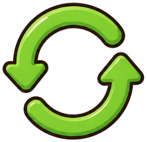
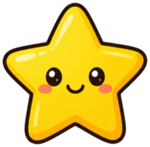

🔐 5번 방 · 직접 만들고 개선하기23차시 / 20~24도입

물건 교과서 · 방 탈출 미션
5번 방 · 23차시
실패해도 괜찮아,
다시 도전!
안 되는 까닭을 찾으면 더 좋아져요.
지난 미션 돌아보기
놀잇감을 만들었어요
설계도를 보며 차근차근 만들면
생각이 진짜 물건이 돼요.
생각이 진짜 물건이 돼요.
📒 제작 일지의 ‘고칠 점’을 짝에게 말해 봐요.
고칠 점이 없다면? 더 멀리, 더 크게! 새 도전!
고칠 점이 없다면? 더 멀리, 더 크게! 새 도전!

MISSION BRIEFING
오늘의 미션 세 가지
미션 1
고장 탐정
왜 안 될까? 원인 찾기
미션 2

다시 도전 고리
시험 → 찾기 → 고치기
미션 3

도전 발표
무엇을 배웠나요?
보상
열쇠 조각 4
5번 방 네 번째!
🧸 오늘 고칠 물건은 22차시에 내가 만든 놀잇감이에요. 따로 고장 난 물건을 만들지 않아요!
🎯 학습 목표 만든 놀잇감을 시험하여 문제의 까닭을 찾고, 고쳐서 다시 시험할 수 있어요.
MISSION 3
🌟 다시 도전 발표
1
“처음에는 □□가 안 됐어요.”
2
“까닭은 △△ 때문이었어요. 그래서 ○○를 고쳤어요.”
3
“다시 해 보니 ~게 되었어요. 실패에서 배운 점은 ~예요.”듣는 친구는 “다음엔 이렇게 해 봐!” 도움말 한 가지!
NEXT MISSION
24차시 예고 · 마지막 미션
튼튼한 물건의 비밀
종이로 만든 다리가 책 몇 권을 버틸까?
📄 이면지 A4 5장
🎗 셀로판테이프